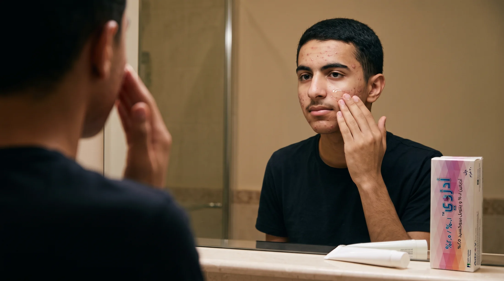

Chapter 07 Usage guidance
How to Use Adzoy™ Gel
Who, when, where, and how to get the best tolerability.

Once daily, at bedtime
A simple evening routine
Who can use it?
Adults & adolescents · ≥ 9 years (0.1%) · ≥ 12 years (0.3%)
When to apply?
Once daily at bedtime, on clean, dry skin.
Where to apply
A thin film over the whole affected area
Apply a thin film of gel evenly over the entire acne-affected areas of the face and/or the trunk.
Acne-affected areas of the face and/or the trunk
Avoid contact with the eyes, lips, nostrils and mucous membranes
How can tolerability be maximized?
Start gently, then step up
STEP 1
Alternate-day application
Start every other day to minimize skin irritation.
OR
Short-contact application
For example, wash off after 1 hour.
STEP 2
Regular daily application
Increase to regular application as tolerated.